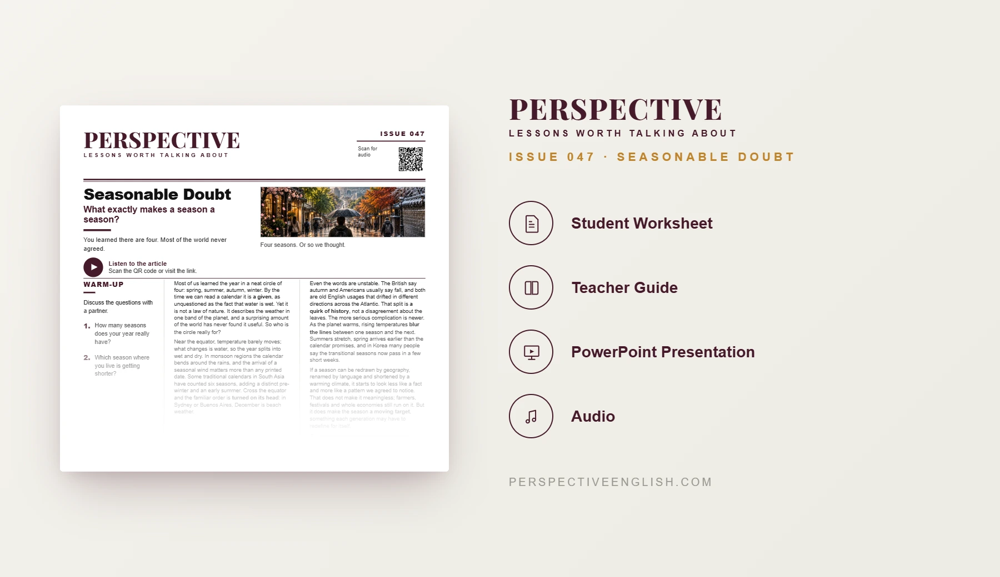

ISSUE 047
Seasonable Doubt ESL Lesson
What exactly makes a season a season?
A ready-to-teach advanced ESL lesson questioning the familiar four-season calendar, exploring wet and dry seasons, traditional calendars, regional language differences and how a warming climate is shifting seasonal boundaries.
CHOOSE YOUR LEVEL
Collection 09 includes Issues 046–050.
LESSON PREVIEW

ABOUT THIS LESSON
About This Seasons ESL Lesson
The four-season calendar can feel like a universal fact, but geography, culture and language tell a different story. This C1–C2 lesson asks what makes a season a season and why the familiar four-season model does not fit everywhere.
Students read and listen to an advanced article about wet and dry seasons near the equator, monsoons, traditional six-season calendars in South Asia, reversed seasons in the Southern Hemisphere, autumn versus fall, and changing seasonal boundaries.
After discussing the meaning of seasons, groups complete the Redraw the Year critical-thinking challenge by inventing three to six new seasons and defending their calendar. They then present a weather-news announcement and respond to objections before writing a 200–250 word opinion that addresses the strongest opposing view.
FROM THE ARTICLE
WHAT'S INCLUDED
What's Included in This Seasonable Doubt ESL Lesson?
- Magazine-style C1–C2 advanced ESL student worksheet
- Original advanced reading and matching audio about seasons, calendars, language and climate change
- Five advanced expressions and five true-or-false comprehension questions
- Five discussion questions about shifting seasons, cultural calendars and what communities may lose
- Redraw the Year critical-thinking activity: design three to six new seasons, set dates and justify each choice
- Language in Context: a given, turn on its head, blur the lines, a quirk of history and a moving target
- Weather-news speaking challenge: propose a new seasonal calendar and defend it against viewers’ objections
- 200–250 word opinion-writing task on whether seasons are defined by weather, calendars or people, addressing the strongest opposing view
- Teacher guide, complete answer key and model writing
- Ready-to-use classroom presentation
Get the complete C1–C2 Seasonable Doubt ESL lesson individually, or get Issues 046–050 together in Perspective Collection 09.
Ready to Teach Seasonable Doubt?
Get the complete C1–C2 Seasonable Doubt ESL lesson individually, or get Issues 046–050 together in Perspective Collection 09.
Secure checkout and instant digital delivery through Payhip.